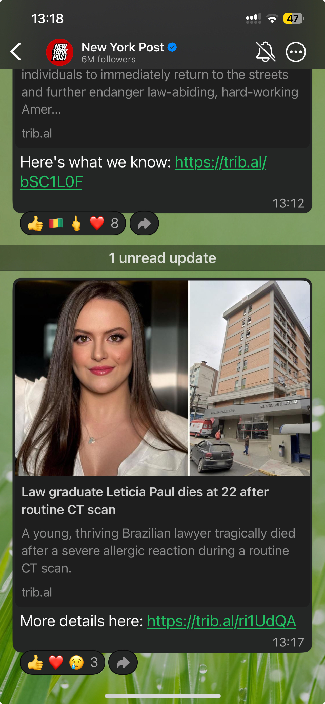

Why Gamify?
Regulation defines “advice.” Games define “play.” By gamifying the care pathway, Ukubona creates a safe, engaging ecosystem where patients, clinicians, insurers, and trainees explore decisions—without claiming to treat, diagnose, or cure.
Pick Your Avatar
👩⚕️ Primary Care Doctor
Balance evidence, time, and risk. Each choice cascades across the system.
🧑🦽 Patient
Navigate symptoms, insurance hurdles, and lifestyle tradeoffs.
🏢 Insurance Executive
Approve or deny? Balance actuarial math against human cost.
📚 Medical Student
Fail safely, repeat scenarios, learn from consequences.
🚑 Emergency Responder
Time is life; resources are finite; decisions are immediate.
🧑⚕️ Nurse
Coordinate bedside care, anticipate crises, maintain continuity.
To Screen or Not to Screen?

The Setup
Patient with chest pain. Low-risk history, but CT with contrast could rule out serious pathology.
The Dilemma
Small but real risk of contrast allergy. Order now or try alternatives first?
Multi-Player Perspectives
Doctor weighs liability, patient wants answers, insurer weighs cost, family fears the worst.
Branching Consequences
Each choice opens new scenarios. Wrong call? Learn. Right call? Face the next decision.